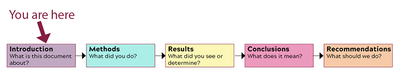

Analyze the rhetorical situation and determine the appropriate audience or users of written communication, considering the needs of global audiences and people with disabilities. [CLO 1]
Conduct research appropriate to workplace problem solving, such as literature review, evaluation of online resources, interview, and site inspection. [CLO 2]
Interpret research findings with understanding of ethical and human implications. [CLO 3]
Use conventions of various workplace genres, such as proposals, instructions, correspondence, reports, and slide decks, with understanding of how the genre conventions can be used as heuristics and as principles of arrangement. [CLO 4]
The Task

The Sections of the Body of the Recommendation Report
What I Want You to Do
Return to the Brainstorming Your Intro activity and find all the information you gathered about your project. Using that information and other notes you have, write the Introduction section of your Recommendation Report.
Why I Want You to Do It
The Introduction section provides an overview of the report that follows. It provides context, background, and forecasts the conclusions and recommendations. This section is one of the required parts of your recommendation report. I am breaking the report out, section-by-section, to guide you through the process of writing the document and help make sure you include everything that is required for a complete report.
Where You Can Find Help
From Markel & Selber, Chapter 18:
The details on the Introduction Section, from p. 479:
“The introduction helps readers understand the technical discussion that follows.”
The list of nine questions to answer in your Introduction, on p. 479.
Example Introduction Section, on pp. 496–497 (part of the sample recommendation report in Figure 18.8).
Because you are working from the Q&A notes from the Brainstorming Your Intro activity, you need to ensure that your introduction flows smoothly. The information needs to sound like paragraphs, rather than a series of answers to questions.
Use these sections from the textbook to as you compose and revise your introduction:
Use the advice in the “Structure Paragraphs Clearly” section, from Chapter 9 of the textbook (pp. 202–207).
See the strategies in the “Use Coherence Devices within and between Paragraphs” section, from Chapter 9 of the textbook (pp. 207–210)
Use the details in Chapter 7, “Organizing Your Information,” to determine how you want to structure your information. It is possible to use more than one pattern. For instance, you might begin with a general-to-specific pattern or a chronological pattern to provide basic information and background, and then you might shift to a problem-methods-solution pattern to provide an overview the report.
Work back through the information you have added to expand the notes into full paragraphs.
Revise your introduction to make sure you have transitions, sentences and clear ideas.
Add Documentation and Citations anywhere that you include paraphrased information or quotations from outside sources.
Ensure that any information you quote from your primary or secondary research is enclosed in quotation marks. Examples might be something that someone says in a response to a survey or interview (both primary research) or something stated in an journal article or book (both secondary research).
Review the section and make any additions or changes, using the information from the textbook and LinkedIn Learning video as needed. At this point, focus in particular in making sure that you have included everything that answers the question, “What is this document about?”
Copy the information from your Introduction section in your word processor document, and paste it into text box below. You do not have to worry about the formatting here, only in the finished report.
Submit your work:
Submit here by 11:59 PM on Friday, April 16.
If you need more time, submit your document later. The assignment will close on Friday, April 30. Realize that I may not have time to provide extensive feedback on work submitted after Wednesday, April 21.
Traci will add the related points to Canvas when she marks your work Complete. She will check only for completion at this stage. Why this change? To allow everyone a longer grace period. This system will still give you the points you earn, but it gives you longer to earn them.